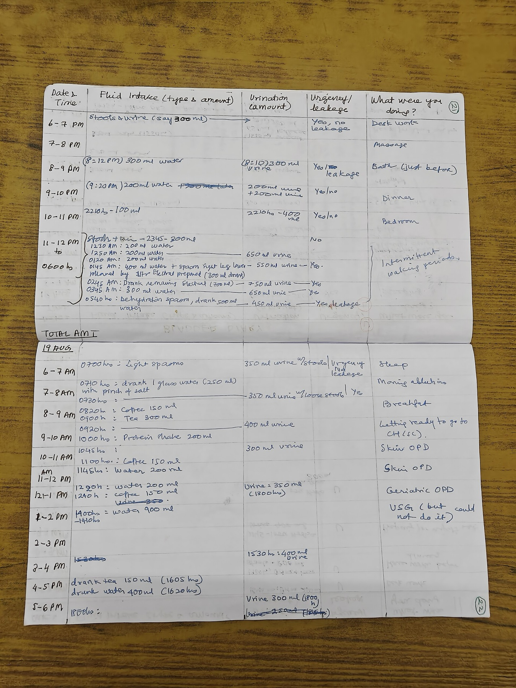

Página 1 · Incontinência urinária na mulher
Dona Lurdinha e a pergunta que define tudo
Necessidade súbita de urinar que resulta em perda antes de conseguir chegar ao toalete; nictúria e aumento da frequência diurna; nega disúria e dor abdominal. É a dona Lurdinha, 60 anos — e o diagnóstico dela se constrói agora.
A dona Lurdinha, 60 anos: o caso que abre e fecha o bloco
A dona Lurdinha tem 60 anos, é branca e chega com uma queixa que ela mesma tem vergonha de contar: sente uma necessidade súbita de urinar e, se não chega ao banheiro a tempo, perde. Urina o dia inteiro e a noite inteira — tem nictúria e aumento da frequência urinária diurna. Nega disúria, nega dor abdominal. Tinha vida social ativa; hoje está limitada pelo constrangimento e começou a ter medo de sair de casa. Nos antecedentes: G5P5 (cinco gestações, cinco partos normais), sem cirurgias prévias; menopausa aos 52 anos (oito anos de última menstruação); café frequente, etilista social e tabagista, com carga tabágica de 35 maços-ano — guarde esse dado, ele reaparece quando o assunto for o câncer de bexiga. Ela vai atravessar todo este bloco: é a paciente cujo diagnóstico se constrói agora e cujo exame, no fecho, entrega números que abrem a discussão seguinte.
Caso 1 · Lurdinha, 60a
Corredor de Casos- Queixa
- Necessidade súbita → perde antes do banheiro; nictúria; ↑ frequência diurna; nega disúria/dor abdominal.
- Antecedentes
- G5P5 partos normais; sem cirurgias; menopausa aos 52; tabagista 35 maços-ano; café; etilista social.
- Exame
- Bexiga já esvaziada na chegada — não deu para avaliar a perda (a régua invertida deste caso).
A exceção da regra: quando a queixa é perda urinária, examina-se com a bexiga CHEIA
Na consulta ginecológica de rotina, pede-se à paciente que esvazie a bexiga antes do exame — bexiga cheia causa desconforto e atrapalha o toque. Mas há uma exceção que a banca adora, e que na Lurdinha custou o diagnóstico: quando a queixa é perda urinária, avalia-se com a bexiga cheia. Só assim é possível flagrar a perda durante o exame, pedindo à paciente que tussa (a manobra provocativa). No caso da Lurdinha, não deu: ela tinha acabado de esvaziar a bexiga, e a perda não pôde ser avaliada. A lição fica: diante de perda urinária, inverta a rotina — bexiga cheia.
A pergunta que quase fecha o diagnóstico: como a senhora perde?
Este é o eixo de toda a discussão. A forma como a paciente descreve que perde urina já praticamente define o diagnóstico. Existem quatro padrões de resposta, e a pergunta-chave da anamnese é montada para separá-los: quando vai perder, a senhora (a) sente antes uma vontade incontrolável de urinar? (b) perde do nada? (c) perde com esforço — ao tossir, espirrar, levantar? ou (d) fica saindo de forma contínua, sem perceber? Cada resposta aponta um mecanismo diferente e um caminho diferente. Isso muda tudo — e é por isso que o passo seguinte do raciocínio transforma esses quatro padrões num mapa.
Investigar de forma ativa: a paciente não conta espontaneamente
A anamnese clássica de livro manda perguntar, em toda consulta, como está a função urinária e a função intestinal. Muitas pacientes têm constipação, fazem muito esforço e desenvolvem outros problemas — e não contam por vergonha ou por acharem irrelevante. Com a perda urinária é a mesma coisa: muitas perdem e não mencionam. Acham que é normal da idade, ou vieram por outra queixa (um fogacho, por exemplo) e nem tocam no assunto. A perda tem de ser investigada ativamente — perguntada de frente, sem esperar que a paciente ofereça.
Nunca é normal perder urina — nem na idade avançada
É preciso dizer isso com todas as letras, porque é onde a paciente se conforma e onde a prova arma a pegadinha: perder urina nunca é normal, em nenhuma idade. Muitas mulheres se resignam (“é da idade, doutora”) e param de buscar ajuda — e param também de sair de casa, como a Lurdinha. A conformação é o inimigo. A perda é sintoma, tem causa e tem conduta.
Há tratamento — e a maioria nem é cirúrgica
A boa notícia, que muda a conversa com a paciente, é que há tratamento para a perda urinária, e a maioria dos tratamentos nem é cirúrgica. Fisioterapia e mudança de estilo de vida resolvem boa parte dos casos. Este é o tom que atravessa as duas escadas terapêuticas do bloco: não se opera nem se medica ninguém à toa — começa-se pelo degrau de baixo, que quase sempre é conservador. Uroginecologia, aliás, é o território que diferencia o aluno na prova: sai do básico (corrimento, sangramento, mioma) e pede um cuidado maior no estudo.

Registrar prospectivamente cada micção — horário, volume, urgência e perda — é o que transforma a queixa vaga em dado: separa urinar muitas vezes de produzir urina em excesso, e caracteriza cada escape enquanto acontece.
AshLin. Handwritten bladder diary. Via Wikimedia Commons, sob CC BY-SA 4.0.
real de instrumento — não achado clínicoQuiz — fixação
Paciente de 68 anos vem à consulta por fogacho. No fim, mencionada de passagem, relata que “às vezes escapa um pouco de urina, mas é normal da idade”. A conduta mais correta é:
- B — a virada. A perda quase nunca é oferecida pela paciente — é resgatada por investigação ativa —, e “é da idade” é exatamente a conformação que a prova pune.
- A. Naturaliza um sintoma tratável e reproduz o mito que se desmonta aqui: perder urina nunca é normal, em nenhuma idade.
- C. Inverte a escada terapêutica — a maioria dos casos resolve com medida conservadora (fisioterapia, estilo de vida); mandar para cirurgia sem sequer definir o mecanismo é queimar etapas.
- D. Pede o padrão-ouro (urodinâmica) antes da anamnese, mas o diagnóstico é primariamente clínico e o exame não é para todo mundo — cai quem confunde “exame mais sofisticado” com “primeiro passo”.
Uma paciente procura o serviço com queixa principal de perda urinária. Sobre o preparo do exame ginecológico:
- B — a virada. A rotina manda esvaziar a bexiga, mas quando a queixa é perda urinária examina-se com a bexiga cheia — foi o que faltou na Lurdinha e custou o flagrante.
- A. Aplica a regra geral justamente no caso que é a exceção — o erro clássico de decorar a regra sem a exceção.
- C. Delega à urodinâmica o que o exame físico com bexiga cheia frequentemente já resolve, e a urodinâmica nem é para todo mundo.
- D. Confunde momentos: o resíduo se mede depois da micção (e pode ser por ultrassom, sem sondar) — sondar antes do exame esvazia a bexiga que deveria estar cheia.
Se o “como” da perda aponta o mecanismo, o passo seguinte é transformar os quatro padrões de resposta num mapa que organiza todo o diferencial.